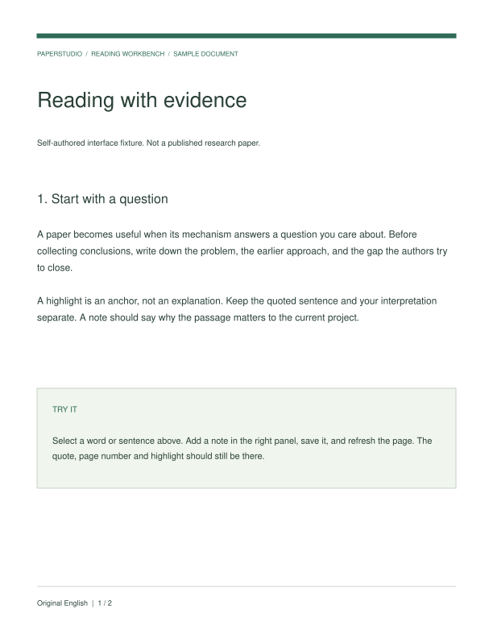
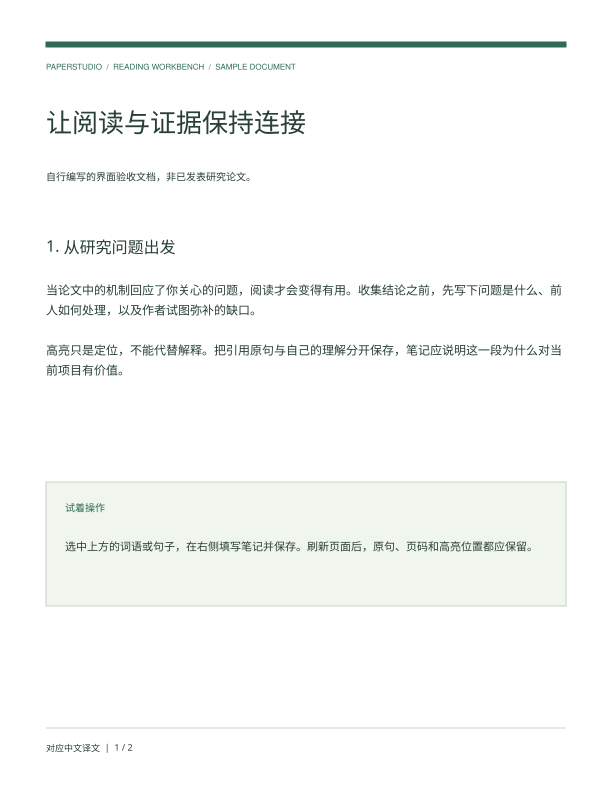

原文 / ORIGINAL



下面是项目组织模板，提供阅读问题和目录结构，不冒充已完成的研究综述。
识别 → 版面 → 结构化输出 → 文档问答
训练目标 → 解码机制 → 速度质量权衡
视觉表征 → 跨模态连接 → 推理与评测
真实工作台可导出 Markdown、BibTeX、自包含 HTML 与 JSON；共享范围由你选择。
这里展示配置流程，实际密钥只在你部署的后端保存。本页不接收密钥。
使用版本化 Docker 镜像；创建自己的管理员账号。
粘贴 arXiv 链接，上传 PDF，或打开自编阅读示例。
兼容 API、本地模型或可选 Codex。填写配置后，分别测试连接和实际调用。
翻译一段、生成摘要或提问；PDF 对照翻译使用可选 BabelDOC。
已有文献库？支持 BibTeX、RIS 与 Zotero CSV。完整论文目录和关系数据可另外加载。
查看安装说明 ↗可自部署 · 模型自由选择 · 项目与笔记独立保存 · 开源可扩展
查看源码与版本 ↗